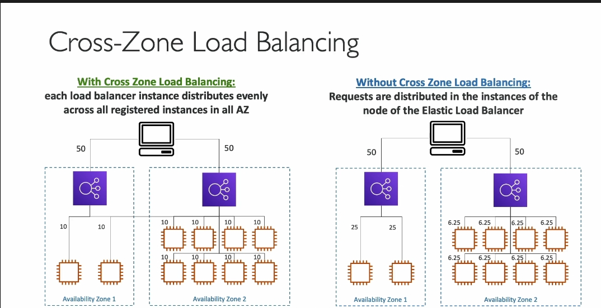

cross zone LB

Kiến thức chi tiết về Cross-Zone Load Balancing (Cân bằng tải liên vùng)
1. Định nghĩa Cross-Zone Load Balancing
- Cross-Zone Load Balancing là một cơ chế giúp phân phối lưu lượng yêu cầu từ người dùng một cách đồng đều giữa các instance (máy chủ) trên nhiều Availability Zone (AZ).
- Nó giúp tận dụng hiệu quả tài nguyên, đặc biệt khi số lượng instance giữa các AZ không cân bằng.
2. Cách hoạt động của Cross-Zone Load Balancing
Ví dụ minh họa:
- Có hai AZ:
- AZ1: Chứa 1 Load Balancer (ALB/NLB/GLB) và 2 EC2 instances.
- AZ2: Chứa 1 Load Balancer và 8 EC2 instances.
- Không sử dụng Cross-Zone Load Balancing:
- Lưu lượng từ người dùng được chia 50%-50% giữa hai AZ.
- Load Balancer trong mỗi AZ chỉ phân phối lưu lượng đến các instance trong AZ đó.
- Kết quả:
- Mỗi instance trong AZ1 nhận nhiều lưu lượng hơn (do ít instance hơn).
- Mỗi instance trong AZ2 nhận ít lưu lượng hơn (do có nhiều instance hơn).
- Hạn chế: Không đồng đều nếu các AZ không có cùng số lượng instance.
- Sử dụng Cross-Zone Load Balancing:
- Load Balancer phân phối đều lưu lượng đến tất cả các instance trong mọi AZ.
- Kết quả:
- Mỗi instance (dù ở AZ1 hay AZ2) nhận một lượng lưu lượng bằng nhau.
- Lợi ích: Phân phối cân bằng ngay cả khi số lượng instance giữa các AZ không đồng đều.
3. Cấu hình mặc định cho các loại Load Balancer
- Application Load Balancer (ALB):
- Cross-Zone Load Balancing bật mặc định.
- Không bị tính phí cho lưu lượng giữa các AZ.
- Network Load Balancer (NLB) & Gateway Load Balancer (GLB):
- Cross-Zone Load Balancing tắt mặc định.
- Có tính phí nếu bật, vì lưu lượng đi qua các AZ sẽ phát sinh chi phí.
4. Khi nào nên bật hoặc tắt Cross-Zone Load Balancing?
- Nên bật khi:
- Số lượng instance giữa các AZ không đều.
- Muốn cân bằng lưu lượng trên tất cả các instance để cải thiện hiệu suất.
- Nên tắt khi:
- Muốn tối ưu hóa lưu lượng trong từng AZ để giảm độ trễ.
- Muốn tránh chi phí phát sinh (với NLB/GLB).
5. Chi phí liên quan
- ALB: Miễn phí cho lưu lượng giữa các AZ khi bật Cross-Zone Load Balancing.
- NLB/GLB: Tính phí cho lưu lượng giữa các AZ khi bật Cross-Zone Load Balancing.
6. Tóm lại
- Cross-Zone Load Balancing giúp cân bằng tải hiệu quả khi hạ tầng có sự phân bổ không đồng đều giữa các AZ.
- Cân nhắc cấu hình dựa trên nhu cầu cân bằng tải và tối ưu chi phí cho từng ứng dụng.